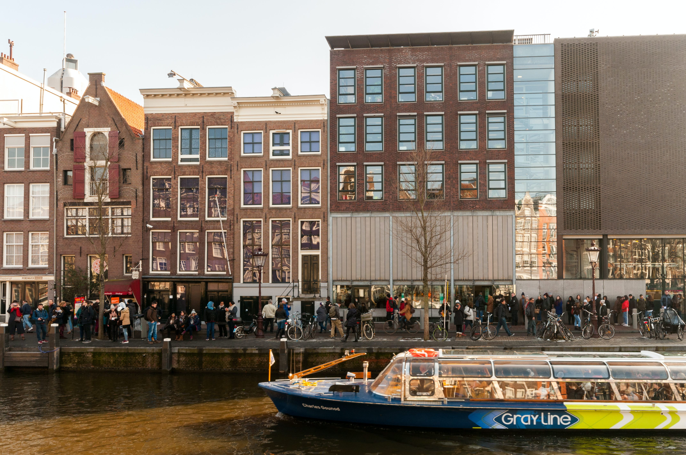

Museos
Ámsterdam tiene una alta concentración de museos dentro de la ciudad , más de setenta y cinco, entre ellos los más importantes son: Rijksmuseum, Museo Stedelijk, Museo Van Gogh, Casa de Ana Frank, Museo Heineken, Madame Tussaud, Museo de la Historia de Ámsterdam, Museo de la Navegación, Museo de Ciencia Nemo, EYE Filmmuseum, Rembrandthuis, Palacio Real en Dam, Museo de la culturas, Tropenmuseum, Archivo de la Ciudad de Ámsterdam.
Rijksmuseum

El Rijksmuseum (en español: Museo del Reino) o Museo Nacional de Ámsterdam se encuentra ubicado en Ámsterdam, Países Bajos. Está dedicado al arte, la artesanía y la historia. Posee la más famosa colección de pinturas del Siglo de Oro neerlandés así como una rica colección de arte asiático y egipcio.
El Rijksmuseum alberga obras significativas de casi todos los grandes maestros neerlandeses de los siglos XV al XVII: Geertgen tot Sint Jans, Lucas van Leyden, Hendrick Goltzius, Frans Hals, Jan Vermeer, Ferdinand Bol, Nicolaes Maes, Guerrit Dou, Jacob Ruysdael, y un repertorio generoso del maestro Rembrandt van Rijn. Cuenta también con pintores de otros países, como Fra Angélico, Piero di Cosimo, Paolo Veronese, Hugo van der Goes, Peter Paul Rubens y Francisco de Goya, así como con numerosos dibujos y grabados, porcelanas orientales, mobiliario y demás artes decorativas, pintura moderna (Van Gogh, Mondrian, Karel Appel) y objetos de diseño del siglo XX.
De todas formas, el principal atractivo del museo radica en las 22 pinturas de Rembrandt, entre las que se cuentan: La ronda de noche, La novia judía, El árbol de Jesé, La muerte de los inocentes y varios paisajes de los antiguos Países Bajos.
Stedelijk

El Museo Stedelijk (en neerlandés, Stedelijk Museum, lit. 'Museo municipal/urbano'), coloquialmente conocido como el Stedelijk, es un museo de arte moderno y arte contemporáneo de la ciudad de Ámsterdam (Países Bajos).Está situado en la plaza de los Museos («Museumplein») cerca del Rijksmuseum, del Museo van Gogh y del Concertgebouw. El edificio del siglo XIX fue diseñado por Adriaan Willem Weissman y el ala del siglo XXI con la entrada actual fue diseñado por los arquitectos Benthem Crouwel Architects.
La colección se compone de arte moderno y arte contemporáneo, y diseño desde principios del siglo XX hasta el siglo XXI. Cuenta con artistas como Vincent van Gogh, Wassily Kandinsky, Ernst Ludwig Kirchner, Marc Chagall, Henri Matisse, Jackson Pollock, Karel Appel, Andy Warhol, Willem de Kooning, Marlene Dumas, Lucio Fontana, y Gilbert & George.Su colección incluye una habitación pintada por Appel, una gran colección de pinturas de Kazimir Malévich y la única obra de Armando Reverón en un museo europeo.
Van Gogh Museum

Annefrankhuis
La Casa de Ana Frank (en neerlandés: Annefrankhuis) en el Prinsengracht en Ámsterdam, Países Bajos, es un museo dedicado a la diarista de guerra judía Ana Frank, que se ocultó de la persecución nazi con su familia y cuatro personas más en el ático y el desván del edificio, tapada la entrada por una falsa estantería. Así como la preservación del escondite —conocido en neerlandés como Achterhuis— y una exhibición sobre la vida y tiempos de Ana Frank. El museo funciona como espacio para resaltar todas las formas de persecución y discriminación. Abrió sus puertas el 3 de mayo de 1960 con la ayuda de suscripción pública, tres años después de establecerse una fundación para proteger a la casa de una empresa que buscaba demoler la zona.
NEMO Museum

El Science Center Nemo es un centro de ciencias situado en Ámsterdam, Países Bajos. Está localizado en el Oosterdok en Amsterdam-Centrum, entre Oosterdokseiland y Kattenburg. El museo tiene sus orígenes en 1923, y desde 1997 está en un edificio diseñado por Renzo Piano. Tiene cinco plantas de exposiciones interactivas de ciencias y es el mayor centro de ciencias de los Países Bajos. Con más de 500 000 visitantes al año es el quinto museo más visitado del país.
Rembrandthuis

Rembrandt Harmenszoon van Rijn es considerado uno de los pintores más importantes de los Países Bajos. La casa donde vivió entre 1639 y 1658 fue construida entre 1606 y 1607 en la antigua calle Sint-Anthonisbreestraat, actualmente la Jodenbreestraat, al lado del Waterlooplein. En la misma zona vivían muchos comerciantes y artistas ricos. Entorno al año 1627 la casa fue remodelada, adquiriendo una nueva fachada y una planta nueva. Es probable que esta remodelación haya sido ejecutada bajo la supervisión de Jacob van Campen, quien posteriormente haría nombre como arquitecto del Ayuntamiento de Ámsterdam, actualmente el Palacio Real de Ámsterdam.